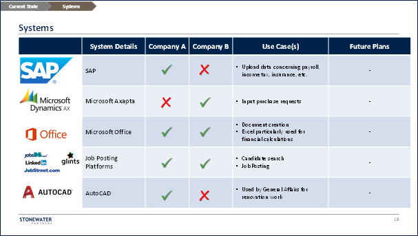

PMI success (or failure) can be strongly correlated with the success (or lack thereof) of unifying and rationalizing the technology systems and applications deployed by the two companies. Systems impact everything, not just how smoothly and efficiently the future processes will work or how successful the cost rationalization efforts will be, but also softer aspects of the transformation, such as how people from each of the two companies will collaborate and how well the legacy cultures will amalgamate into one.
This step of the Stonewater Partners PMI framework involves an assessment of what technologies and systems are currently used, who uses them and how, how well they meet the future needs and requirements of the business, what alternatives exist in the marketplace, and what risks and issues exist with current systems that would have to be managed and mitigated in the transition.
Our approach includes creating a detailed review of technology systems and the use cases relevant to each functional group, in-depth interviews with department leaders and staff, and extensive secondary research into comparable technologies and systems. All of that information is captured in a proprietary business systems matrix designed by Stonewater Partners (see Figure 3).

Figure 3. Stonewater Partners Business Systems Matrix
We conduct a thorough sweep of systems and technologies utilized by each function and department within each of the two companies, documenting detailed use cases, security protocols and procedures, existing plans for future upgrades, hardware requirements, and data sources and standards. A detailed systems risk and issue log is also maintained for each technology platform or application.
From this detailed baseline, we develop a streamlined future-state systems design and requirements, taking into consideration all the design principles and priorities, as well as the proposed structural changes affecting people and processes from the earlier steps of the PMI framework. An important area that the PMI team must actively manage is the interactions and integrations between different systems and technology tools, both legacy and new. This includes reconfiguring and managing the authentication and account provisioning for all users, hardware recalls and distribution, and refreshing all technology vendor contracts. Another key area is data standardization and integration, including master data tracking and harmonizing, data remapping and migration, and centralization and archiving of legacy databases. All these assessments and redesigns go hand-in-hand with the process realignments we undertake in Step 3. By aligning the technology tools more closely with process workflows, by taking the opportunity to automate previously manual activities, and by connecting previously disparate systems, we can drive significant improvements in efficiency, productivity and profitability, while measurably reducing error rates and eliminating the need for human intervention for manual tasks, such as reconciliations or data entry and transfers.
Interested in learning more? Find the next article in this series, “Consolidating Contracts in a Post-Merger Integration”, here.